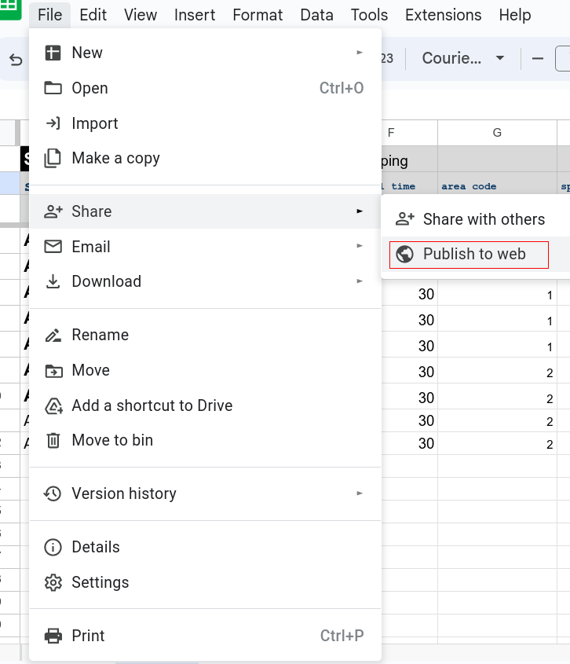
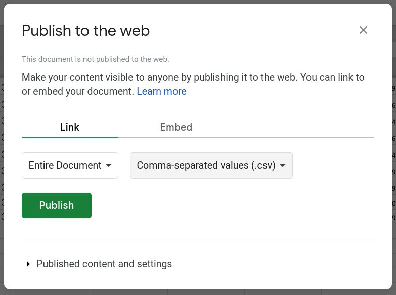

Copy
Make a copy of this table (you will perhaps need a Google account):https://docs.google.com/spreadsheets/d/1K4z2Up7PbC__3yXLqWTkNsnOSVtqYm4u6FtFCVmyTXw/edit?usp=sharing
Publish
Now publish your table as a "comma-separated values" file.

Copy code
You will finally get a link with a completely different URL from the previous one, clicking it leads directly to downloading the raw data. You do not need to do this; instead, grab just the 86-byte code from the middle :https://docs.google.com/spreadsheets/d/e/2PACX-1vRZbVmg68lEl8VS9DGa1rEDS5-V55Ome6JXc6Cs4UuGhAYUgHHZw1x1_f9AbvHlyDL8GmzRVxli0W-o/pub?output=csv

Paste code
Embed your table's code into an address like this:https://www.fzu.cz/~dominecf/xy/?googleid=2PACX-1vRZbVmg68lEl8VS9DGa1rEDS5-V55Ome6JXc6Cs4UuGhAYUgHHZw1x1_f9AbvHlyDL8GmzRVxli0W-o
And go to this address with your browser.
View
You should see an empty plot, which however already has loaded all data for plotting. Now select the data columns which you wish to be used for the x-axis, y-axis and point coloring. You may also enable the inheritance arrows.Share
To share the view with your friends and colleagues, copy the long text from the address bar, which now conveys the information about the choice of axes. So in this case you would send them this ugly link:https://www.fzu.cz/~dominecf/xy/?googleid=2PACX-1vRZbVmg68lEl8VS9DGa1rEDS5-V55Ome6JXc6Cs4UuGhAYUgHHZw1x1_f9AbvHlyDL8GmzRVxli0W-o&x=length&y=weight&c=maze%20solving
You may also save this link into your table's cell C3, so that you never have to search for it in your bookmarks/emails.
Note this is just a javascript page; all data are stored in your own Google spreadsheet, all plotting is done in your browser. You may use this page for as many data tables as you wish.